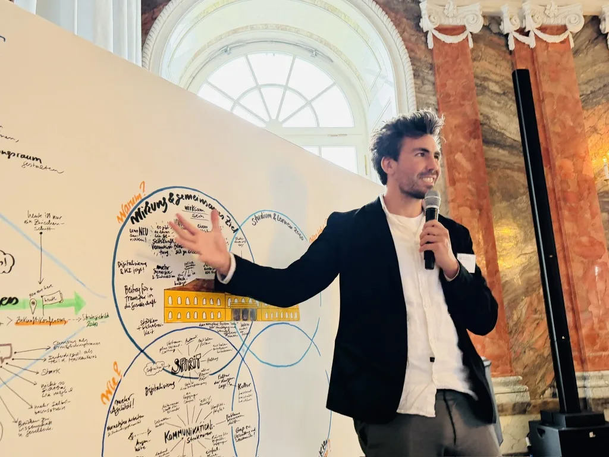

ModerationFacilitation
Event-Moderation für Konferenzen und Organisationen, die ihre Themen souverän auf die Bühne bringen und ihr Publikum wirklich erreichen wollen. Event facilitation for conferences and organisations that want to bring their topics to the stage with confidence and truly reach their audience.
- Event-ModerationEvent facilitation
- Veranstaltungs-DesignEvent design
- Keynotes & VorträgeKeynotes & talks
ErgebnisResult Workshops mit rotem Faden, die Inhalte klar transportieren, das Publikum einbinden und in Erinnerung bleiben. Workshops with a clear thread that convey content clearly, engage the audience and stay memorable.
ModerationFacilitation